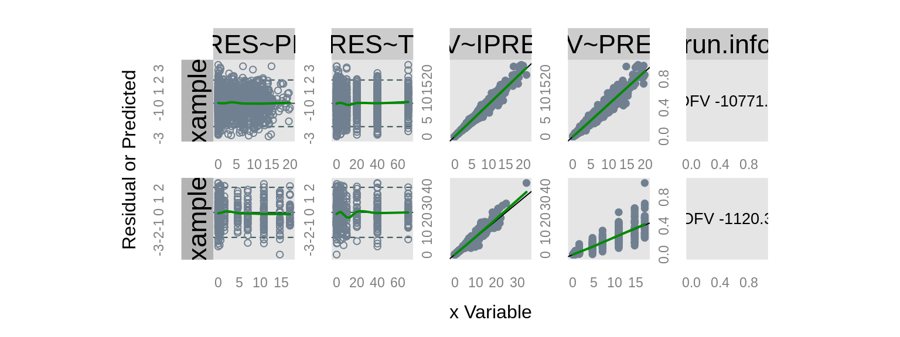

ExamplesnmxxxFunctionsqpToolkit.Rmd##
## nm.pr.> nm.params.table(run = "example1", path = getOption("qpExampleDir"))## Joining, by = "Parameter"## Parameter Estimate CV.perc SE estimated
## 1 THETA1 1.686930000 2.55967941764033 0.04318 estimated
## 2 THETA2 1.611290000 2.95483122218843 0.0476109 estimated
## 3 THETA3 0.819605000 8.53864971541169 0.0699832 estimated
## 4 THETA4 2.391610000 2.15700720435188 0.0515872 estimated
## 5 OMEGA1.1 0.165061000 16.4708198787115 0.0271869 estimated
## 6 OMEGA2.1 -0.000741979 -2803.0712459517 0.0207982 estimated
## 7 OMEGA2.2 0.131429000 23.8227484040813 0.03131 estimated
## 8 OMEGA3.1 0.012411200 240.912240556916 0.0299001 estimated
## 9 OMEGA3.2 0.015956500 223.893711026854 0.0357256 estimated
## 10 OMEGA3.3 0.187548000 38.3405848102886 0.071907 estimated
## 11 OMEGA4.1 -0.012735500 -185.120332927643 0.023576 estimated
## 12 OMEGA4.2 0.013906100 173.090945700088 0.0240702 estimated
## 13 OMEGA4.3 0.033270200 127.986005494406 0.0425812 estimated
## 14 OMEGA4.4 0.149906000 25.4973116486331 0.038222 estimated
## 15 SIGMA1.1 0.057163200 13.2438876759873 0.00757063 estimated
##
## nm.pr.> nm.params.table("example2", path = getOption("qpExampleDir"),
## nm.pr.+ fixed.text = "(fixed to 0)", return.all = TRUE)## Joining, by = "Parameter"## Estimate SE Eigen CondNum sd.var sd.sd.var
## 1 3.305220000 0.0326572 0.0258399 158.3920000 0.0000000 0.00000e+00
## 2 3.257970000 0.0286466 0.0276883 0.0258399 0.0000000 0.00000e+00
## 3 -0.611824000 0.00952096 0.0352403 4.0928400 0.0000000 0.00000e+00
## 4 -0.208226000 0.00831004 0.0444284 0.0000000 0.0000000 0.00000e+00
## 5 0.735323000 0.0391716 0.0596110 0.0000000 0.0000000 0.00000e+00
## 6 1.139920000 0.035768 0.2052890 0.0000000 0.0000000 0.00000e+00
## 7 0.336296000 0.0113245 0.2703130 0.0000000 0.0000000 0.00000e+00
## 8 0.191801000 0.0103567 0.2981540 0.0000000 0.0000000 0.00000e+00
## 9 0.694545000 0.0104684 0.4992870 0.0000000 0.0000000 0.00000e+00
## 10 2.301570000 0.00857532 0.5624250 0.0000000 0.0000000 0.00000e+00
## 11 0.100030000 0.00282728 0.6202310 0.0000000 0.0000000 0.00000e+00
## 12 0.010282100 0.000968195 1.1033500 0.0000000 0.1014010 4.77410e-03
## 13 0.000191938 0.000827503 1.3254500 0.0000000 0.0212316 9.06201e-02
## 14 0.007948230 0.00137461 1.3571500 0.0000000 0.0891528 7.70929e-03
## 15 0.001281790 0.00127722 1.4866100 0.0000000 0.1263650 1.14875e-01
## 16 -0.000170245 0.00143627 1.5644400 0.0000000 -0.0190894 1.62476e-01
## 17 0.010006800 0.003046 1.5993100 0.0000000 0.1000340 1.52248e-02
## 18 -0.000595539 0.00100317 2.4044700 0.0000000 -0.0597246 1.04157e-01
## 19 0.000542183 0.00109632 2.7388500 0.0000000 0.0618437 1.21953e-01
## 20 0.002000550 0.00214226 4.0928400 0.0000000 0.2033690 1.75727e-01
## 21 0.009670120 0.00192347 0.0000000 0.0000000 0.0983368 9.78003e-03
## 22 1.000000000 (fixed to 0) 0.6790310 0.0000000 1.0000000 1.00000e+10
## Parameter index level ord estimated CV.perc Run
## 1 THETA1 1.0 THETA 1 1.0 estimated 0.988049207011939 example2
## 2 THETA2 2.0 THETA 1 2.0 estimated 0.879277586963662 example2
## 3 THETA3 3.0 THETA 1 3.0 estimated -1.55615994142106 example2
## 4 THETA4 4.0 THETA 1 4.0 estimated -3.99087529895402 example2
## 5 THETA5 5.0 THETA 1 5.0 estimated 5.3271283503984 example2
## 6 THETA6 6.0 THETA 1 6.0 estimated 3.1377640536178 example2
## 7 THETA7 7.0 THETA 1 7.0 estimated 3.36742036777125 example2
## 8 THETA8 8.0 THETA 1 8.0 estimated 5.39971115896163 example2
## 9 THETA9 9.0 THETA 1 9.0 estimated 1.5072313529001 example2
## 10 THETA10 10.0 THETA 110.0 estimated 0.372585669781932 example2
## 11 THETA11 11.0 THETA 111.0 estimated 2.82643207037889 example2
## 12 OMEGA1.1 1.1 OMEGA 2 1.1 estimated 9.41631573316735 example2
## 13 OMEGA2.1 2.1 OMEGA 2 2.1 estimated 431.130365013702 example2
## 14 OMEGA2.2 2.2 OMEGA 2 2.2 estimated 17.2945423069035 example2
## 15 OMEGA3.1 3.1 OMEGA 2 3.1 estimated 99.6434673386436 example2
## 16 OMEGA3.2 3.2 OMEGA 2 3.2 estimated -843.648858997327 example2
## 17 OMEGA3.3 3.3 OMEGA 2 3.3 estimated 30.4393012751329 example2
## 18 OMEGA4.1 4.1 OMEGA 2 4.1 estimated -168.447406467083 example2
## 19 OMEGA4.2 4.2 OMEGA 2 4.2 estimated 202.204790633421 example2
## 20 OMEGA4.3 4.3 OMEGA 2 4.3 estimated 107.083552023194 example2
## 21 OMEGA4.4 4.4 OMEGA 2 4.4 estimated 19.8908596790939 example2
## 22 SIGMA1.1 1.1 SIGMA 3 1.1 fixed (fixed to 0) example2##
## gt.tht> get.theta("example1", path = getOption("qpExampleDir"), fixed.text = "(fixed to 0)")## Joining, by = "Parameter"## Parameter Estimate CV.perc SE estimated
## 1 THETA1 1.686930 2.55967941764033 0.04318 estimated
## 2 THETA2 1.611290 2.95483122218843 0.0476109 estimated
## 3 THETA3 0.819605 8.53864971541169 0.0699832 estimated
## 4 THETA4 2.391610 2.15700720435188 0.0515872 estimated##
## get.mg> get.omega("example2", path = getOption("qpExampleDir"), fixed.text = "(fixed to 0)")## Joining, by = "Parameter"## Parameter Estimate CV.perc SE estimated
## 12 OMEGA1.1 0.010282100 9.41631573316735 0.000968195 estimated
## 13 OMEGA2.1 0.000191938 431.130365013702 0.000827503 estimated
## 14 OMEGA2.2 0.007948230 17.2945423069035 0.00137461 estimated
## 15 OMEGA3.1 0.001281790 99.6434673386436 0.00127722 estimated
## 16 OMEGA3.2 -0.000170245 -843.648858997327 0.00143627 estimated
## 17 OMEGA3.3 0.010006800 30.4393012751329 0.003046 estimated
## 18 OMEGA4.1 -0.000595539 -168.447406467083 0.00100317 estimated
## 19 OMEGA4.2 0.000542183 202.204790633421 0.00109632 estimated
## 20 OMEGA4.3 0.002000550 107.083552023194 0.00214226 estimated
## 21 OMEGA4.4 0.009670120 19.8908596790939 0.00192347 estimated##
## gt.sgm> get.sigma("example2", path = getOption("qpExampleDir"), fixed.text = "(fixed to 0)")## Joining, by = "Parameter"## Parameter Estimate CV.perc SE estimated
## 22 SIGMA1.1 1 (fixed to 0) (fixed to 0) fixed##
## prcs.T> process.parTable(
## prcs.T+ nm = nm.params.table(run = "example1", path = getOption("qpExampleDir"), runIndex = 1)
## prcs.T+ , transformations = list(log = c(1:12))
## prcs.T+ , missing.format = "...."
## prcs.T+ )## Joining, by = "Parameter"## Parameter Estimate CV.perc SE estimated CI95
## 1 $\\theta_{1}$ 5.40 .... .... estimated (4.96 - 5.88)
## 2 $\\theta_{2}$ 5.01 .... .... estimated (4.56 - 5.50)
## 3 $\\theta_{3}$ 2.27 .... .... estimated (1.98 - 2.60)
## 4 $\\theta_{4}$ 10.9 .... .... estimated (9.88 - 12.1)
## 5 $\\omega_{1.1}$ 1.18 .... .... estimated (1.12 - 1.24)
## 6 $\\omega_{2.1}$ 0.999 .... .... estimated (0.959 - 1.04)
## 7 $\\omega_{2.2}$ 1.14 .... .... estimated (1.07 - 1.21)
## 8 $\\omega_{3.1}$ 1.01 .... .... estimated (0.955 - 1.07)
## 9 $\\omega_{3.2}$ 1.02 .... .... estimated (0.947 - 1.09)
## 10 $\\omega_{3.3}$ 1.21 .... .... estimated (1.05 - 1.39)
## 11 $\\omega_{4.1}$ 0.987 .... .... estimated (0.943 - 1.03)
## 12 $\\omega_{4.2}$ 1.01 .... .... estimated (0.967 - 1.06)
## 13 $\\omega_{4.3}$ 0.0333 128 0.0426 estimated (-0.0502 - 0.117)
## 14 $\\omega_{4.4}$ 0.150 25.5 0.0382 estimated (0.0750 - 0.225)
## 15 $\\sigma_{1.1}$ 0.0572 13.2 0.00757 estimated (0.0423 - 0.0720)
## transformed
## 1 log
## 2 log
## 3 log
## 4 log
## 5 log
## 6 log
## 7 log
## 8 log
## 9 log
## 10 log
## 11 log
## 12 log
## 13 no
## 14 no
## 15 no
##
## prcs.T> process.parTable(
## prcs.T+ nm = nm.params.table(run = "example1", path = getOption("qpExampleDir"))
## prcs.T+ , transformations = list(logit = c(7,9))
## prcs.T+ , plain = TRUE
## prcs.T+ , missing.format = "...."
## prcs.T+ )## Joining, by = "Parameter"## Parameter Estimate CV.perc SE estimated CI95 transformed
## 1 THETA1 1.69 2.6 0.0432 estimated (1.60 - 1.77) no
## 2 THETA2 1.61 3 0.0476 estimated (1.52 - 1.70) no
## 3 THETA3 0.820 8.5 0.0700 estimated (0.682 - 0.957) no
## 4 THETA4 2.39 2.2 0.0516 estimated (2.29 - 2.49) no
## 5 OMEGA1.1 0.165 16.5 0.0272 estimated (0.112 - 0.218) no
## 6 OMEGA2.1 -0.000742 2803.1 0.0208 estimated (-0.0415 - 0.0400) no
## 7 OMEGA2.2 0.533 .... .... estimated (0.518 - 0.548) logit
## 8 OMEGA3.1 0.0124 240.9 0.0299 estimated (-0.0462 - 0.0710) no
## 9 OMEGA3.2 0.504 .... .... estimated (0.486 - 0.521) logit
## 10 OMEGA3.3 0.188 38.3 0.0719 estimated (0.0466 - 0.328) no
## 11 OMEGA4.1 -0.0127 185.1 0.0236 estimated (-0.0589 - 0.0335) no
## 12 OMEGA4.2 0.0139 173.1 0.0241 estimated (-0.0333 - 0.0611) no
## 13 OMEGA4.3 0.0333 128 0.0426 estimated (-0.0502 - 0.117) no
## 14 OMEGA4.4 0.150 25.5 0.0382 estimated (0.0750 - 0.225) no
## 15 SIGMA1.1 0.0572 13.2 0.00757 estimated (0.0423 - 0.0720) no
##
## prcs.T> process.parTable(
## prcs.T+ nm = nm.params.table(run = "example1", path = getOption("qpExampleDir"))
## prcs.T+ , transformations = list(logit = c(7,9))
## prcs.T+ , plain = TRUE
## prcs.T+ , formatted = FALSE
## prcs.T+ , missing.format = "...."
## prcs.T+ )## Joining, by = "Parameter"## Parameter Estimate CV.perc SE estimated CI95 transformed
## 1 THETA1 1.69 2.6 0.0432 estimated (1.6 - 1.77) no
## 2 THETA2 1.61 3 0.0476 estimated (1.52 - 1.7) no
## 3 THETA3 0.820 8.5 0.07 estimated (0.682 - 0.957) no
## 4 THETA4 2.39 2.2 0.0516 estimated (2.29 - 2.49) no
## 5 OMEGA1.1 0.165 16.5 0.0272 estimated (0.112 - 0.218) no
## 6 OMEGA2.1 -0.000742 2803.1 0.0208 estimated (-0.0415 - 0.04) no
## 7 OMEGA2.2 0.533 .... .... estimated (0.518 - 0.548) logit
## 8 OMEGA3.1 0.0124 240.9 0.0299 estimated (-0.0462 - 0.071) no
## 9 OMEGA3.2 0.504 .... .... estimated (0.486 - 0.521) logit
## 10 OMEGA3.3 0.188 38.3 0.0719 estimated (0.0466 - 0.328) no
## 11 OMEGA4.1 -0.0127 185.1 0.0236 estimated (-0.0589 - 0.0335) no
## 12 OMEGA4.2 0.0139 173.1 0.0241 estimated (-0.0333 - 0.0611) no
## 13 OMEGA4.3 0.0333 128 0.0426 estimated (-0.0502 - 0.117) no
## 14 OMEGA4.4 0.150 25.5 0.0382 estimated (0.075 - 0.225) no
## 15 SIGMA1.1 0.0572 13.2 0.00757 estimated (0.0423 - 0.072) no##
## prcss.> rr = read.runrec(
## prcss.+ filename = "AAruninfo.txt",
## prcss.+ path = system.file(package = 'qpToolkit','NONMEM')
## prcss.+ )
##
## prcss.> process.runrec(rr)
## Run Ref OFV $\\Delta$OFV CondNum Minimization
## 1 1 0 -1121.0 <NA> 27 Successful
## 2 2 1 -10772.1 \\textbf{\\color{blue}{-9651.1}} 158 Successful
## Description action
## 1 2 compartment model ~
## 2 Covariate Model CL and V with Gender and Age accepted
##
## prcss.> process.runrec(rr, plain = TRUE)
## Run Ref OFV dOFV CondNum Minimization
## 1 1 0 -1121.0 <NA> 27 Successful
## 2 2 1 -10772.1 -9651.1 158 Successful
## Description action
## 1 2 compartment model ~
## 2 Covariate Model CL and V with Gender and Age accepted##
## nm.p2.> nm.parse2r.operators(c("DOSE.GT.10","AMT.LE.10","ID.EQ.1000","SEX!=0"))
## [1] "DOSE>10" "AMT<=10" "ID==1000" "SEX!=0"##
## nm.p..> nm.parse.control.stream("example1", path = getOption("qpExampleDir"), file.ext = ".ctl")
## $PROB
## [1] "$PROB RUN# Example 1 (from samp5l)"
## [2] ";; 1. Based on:0"
## [3] ";; 2. Description:"
## [4] ";; 2 compartment model"
## [5] ";; 3. Label:"
## [6] ";; 2CMT"
## [7] ";; 4. Structural model:"
## [8] ";; ADVAN3 TRANS4"
## [9] ";; 5. Covariate model:"
## [10] ";; None"
## [11] ";; 6. Inter-individual variability:"
## [12] ";; CL, V1, Q, V2"
## [13] ";; 7. Inter-occasion variability:"
## [14] ";; None"
## [15] ";; 8. Residual variability:"
## [16] ";; proportional"
## [17] ";; 9. Estimation:"
## [18] ";; FOCE INTER, SAEM, BAYES, IMP"
## [19] "; carries over to the next $EST statement, within a $PROB). The SAEM is a Monte Carlo process,"
## [20] "; so setting the SEED assures repeatability of results. Each iteration obtains only 2 Monte"
## [21] "; Carlo samples ISAMPLE), so they are very fast. But many iterations are needed, so PRINT only"
## [22] "; every 100th iteration. After the stochastic phase, 500 accumulation iterations will be"
## [23] "; Performed (NITER), to obtain good parameters estimates with little stochastic noise."
## [24] "; As a new FILE has not been given, the SAEM results will append to example1.ext."
##
## $INPUT
## [1] "$INPUT C SET ID JID TIME DV=CONC AMT=DOSE RATE EVID MDV CMT CLX V1X QX V2X SDIX SDSX"
##
## $DATA
## [1] "$DATA example1.csv IGNORE=C"
##
## $SUBROUTINES
## [1] "$SUBROUTINES ADVAN3 TRANS4"
## [2] ";NTHETA=number of Thetas to be estimated"
## [3] ";NETA=number of Etas to be estimated (and to be described by NETAxBETA OMEGA matrix)"
## [4] ";NTHP=number of thetas which have a prior"
## [5] ";NETP=number of Omegas with prior"
## [6] ";Prior information is important for MCMC Bayesian analysis, not necessary for maximization"
## [7] "; methods"
##
## $PRIOR
## [1] "$PRIOR NWPRI NTHETA=4, NETA=4, NTHP=4, NETP=4"
##
## $PK
## [1] "$PK"
## [2] "; The thetas are MU modeled. Best that there is a linear relationship between THETAs and Mus"
## [3] "; The linear MU modeling of THETAS allows them to be efficiently Gibbs sampled."
## [4] "MU_1=THETA(1)"
## [5] "MU_2=THETA(2)"
## [6] "MU_3=THETA(3)"
## [7] "MU_4=THETA(4)"
## [8] "CL=DEXP(MU_1+ETA(1))"
## [9] "V1=DEXP(MU_2+ETA(2))"
## [10] "Q=DEXP(MU_3+ETA(3))"
## [11] "V2=DEXP(MU_4+ETA(4))"
## [12] "S1=V1"
## [13] "STRT = 0"
## [14] "IF(ID.GT.50) STRT = 1"
##
## $ERROR
## [1] "$ERROR" "IPRED = F"
## [3] "Y = F + F*EPS(1)" "; Initial values of THETA"
##
## $THETA
## [1] "$THETA "
## [2] "(0.001, 2.0) ;[LN(CL)]"
## [3] "(0.001, 2.0) ;[LN(V1)]"
## [4] "(0.001, 2.0) ;[LN(Q)]"
## [5] "(0.001, 2.0) ;[LN(V2)]"
## [6] ";INITIAL values of OMEGA"
## [7] "$THETA (2.0 FIX) (2.0 FIX) (2.0 FIX) (2.0 FIX)"
## [8] "; Variance to prior information of THETAS. Because variances are very large, this"
## [9] "; means that the prior information to the THETAS is highly uninformative."
## [10] "$THETA (4 FIX)"
## [11] "; The first analysis is iterative two-stage, maximum of 500 iterations (NITER), iteration results"
## [12] "; are printed every 5 iterations, gradient precision (SIGL) is 4. Termination is tested on all of"
## [13] "; the population parameters (CTYPE=3), and for less then 2 significant digits change (NSIG)."
## [14] "; Prior information is not necessary for ITS, so NOPRIOR=1. The intermediate and final results"
## [15] "; of the ITS method will be recoded in row/column format in example1.ext"
##
## $OMEGA
## [1] "$OMEGA BLOCK(4)"
## [2] "0.15 ;[P]"
## [3] "0.01 ;[F]"
## [4] "0.15 ;[P]"
## [5] "0.01 ;[F]"
## [6] "0.01 ;[F]"
## [7] "0.15 ;[P]"
## [8] "0.01 ;[F]"
## [9] "0.01 ;[F]"
## [10] "0.01 ;[F]"
## [11] "0.15 ;[P]"
## [12] ";Initial value of SIGMA"
## [13] "$OMEGA BLOCK(4)"
## [14] "10000 FIX "
## [15] "0.00 10000"
## [16] "0.00 0.00 10000"
## [17] "0.00 0.00 0.0 10000"
## [18] "; Prior information to the OMEGAS."
## [19] "$OMEGA BLOCK(4)"
## [20] "0.2 FIX "
## [21] "0.0 0.2 "
## [22] "0.0 0.0 0.2"
## [23] "0.0 0.0 0.0 0.2"
## [24] ";Degrees of freedom to prior OMEGA matrix. Because degrees of freedom is very low, equal to the"
## [25] "; the dimension of the prior OMEGA, this means that the prior information to the OMEGAS is"
## [26] "; highly uninformative"
##
## $SIGMA
## [1] "$SIGMA " "(0.6 ) ;[P]"
## [3] "; Prior information of THETAS"
##
## $EST
## [1] "$EST METHOD=ITS INTERACTION FILE=example1.ext NITER=500 PRINT=5 NOABORT SIGL=4 CTYPE=3 CITER=10 "
## [2] " CALPHA=0.05 NOPRIOR=1 NSIG=2"
## [3] "; The results of ITS are used as the initial values for the SAEM method. A maximum of 3000"
## [4] "; stochastic iterations (NBURN) is requested, but may end early if statistical test determines"
## [5] "; that variations in all parameters is stationary (note that any settings from the previous $EST"
## [6] "; carries over to the next $EST statement, within a $PROB). The SAEM is a Monte Carlo process,"
## [7] "; so setting the SEED assures repeatability of results. Each iteration obtains only 2 Monte"
## [8] "; Carlo samples ISAMPLE), so they are very fast. But many iterations are needed, so PRINT only"
## [9] "; every 100th iteration. After the stochastic phase, 500 accumulation iterations will be"
## [10] "; Performed (NITER), to obtain good parameters estimates with little stochastic noise."
## [11] "; As a new FILE has not been given, the SAEM results will append to example1.ext."
## [12] "$EST METHOD=SAEM INTERACTION NBURN=3000 NITER=500 PRINT=100 SEED=1556678 ISAMPLE=2"
## [13] "; After the SAEM method, obtain good estimates of the marginal density (objective function),"
## [14] "; along with good estimates of the standard errors. This is best done with importance sampling"
## [15] "; (IMP), performing the expectation step only (EONLY=1), so that final population parameters"
## [16] "; remain at the final SAEM result. Five iterations (NITER) should allow the importance sampling"
## [17] "; proposal density to become stationary. This is observed by the objective function settling "
## [18] "; to a particular value (with some stochastic noise). By using 3000 Monte Carlo samples"
## [19] "; (ISAMPLE), this assures a precise assessment of standard errors."
## [20] "$EST METHOD=IMP MAPITER=0 INTERACTION EONLY=1 NITER=5 ISAMPLE=3000 PRINT=1 SIGL=8 NOPRIOR=1"
## [21] "; The Bayesian analysis is performed. While 10000 burn-in"
## [22] "; iterations are requested as a maximum, because the termination test is on (CTYPE<>0, set at the"
## [23] "; first $EST statement), and because the initial parameters are at the SAEM result, which is the"
## [24] "; maximum likelihood position, the analysis should settle down to a stationary distribution in"
## [25] "; several hundred iterations. Prior information is also used to facilitate Bayesian analysis."
## [26] "; The individual Bayesian iteration results are important, and may be need for post-processing"
## [27] "; analysis. So specify a separate FILE for the Bayesian analysis. "
## [28] "$EST METHOD=BAYES INTERACTION FILE=example1.txt NBURN=10000 NITER=10000 PRINT=100 NOPRIOR=0"
## [29] "; Just for old-times sake, let?s see what the traditional FOCE method will give us. "
## [30] "; And, remember to introduce a new FILE, so its results won?t append to our Bayesian FILE. "
## [31] "; Appending to example1.ext with the EM methods is fine."
## [32] "$EST METHOD=COND INTERACTION MAXEVAL=9999 NSIG=3 SIGL=10 PRINT=5 NOABORT NOPRIOR=1"
## [33] " FILE=example1.ext"
## [34] "; Time for the standard error results. You may request a more precise gradient precision (SIGL)"
## [35] "; that differed from that used during estimation."
##
## $COV
## [1] "$COV MATRIX=R PRINT=E UNCONDITIONAL SIGL=12"
## [2] "; Print out results in tables. Include some of the new weighted residual types"
##
## $TABLE
## [1] "$TABLE ID TIME DV IPRED PRED EVID RES WRES CPRED CWRES EPRED ERES EWRES NOAPPEND ONEHEADER "
## [2] " FILE=example1.sdtab NOPRINT"
## [3] "$TABLE ID CL V1 Q V2 ETA1 ETA2 ETA3 ETA4 NOAPPEND ONEHEADER NOPRINT FILE=example1.patab"##
## nm.md.> ## when there is no Bayesian estimation
## nm.md.> nm.modeltrail.graph(runs = c("example1","example2")
## nm.md.+ , relabel = c("structural model", "final covariate model")
## nm.md.+ , file.ext = ".mext"
## nm.md.+ , path = getOption("qpExampleDir")
## nm.md.+ )
## example1.Iterative Two Stage (No Prior)
## example1.Stochastic Approximation Expectation-Maximization (No Prior)
## example1.Objective Function Evaluation by Importance Sampling (No Prior)
## example1.First Order Conditional Estimation with Interaction (No Prior)
## example2.Iterative Two Stage (No Prior)
## example2.Stochastic Approximation Expectation-Maximization (No Prior)
## example2.Objective Function Evaluation by Importance Sampling (No Prior)
## example2.First Order Conditional Estimation with Interaction (No Prior)
## ... are not Bayesian runs and will be discarded.
## As none of the runs supplied are Bayesian runs the entire routine aborted
## NULL##
## nm.cm.> nm.compare.plot(runs = c("example1","example2")
## nm.cm.+ , path =getOption("qpExampleDir")
## nm.cm.+ , alias = list(DV = "CONC",TIME = "TIME")
## nm.cm.+ , keep.cols = c('ID','DV','CWRES','PRED','IPRED','TIME','EVID')
## nm.cm.+ , text.size = 0.6
## nm.cm.+ )
## -1120.262 -10771.86
##
## nm.nzp> file.exists( file.path(getOption("qpExampleDir"),"example1/example1.cov"))
## [1] FALSE
##
## nm.nzp> nm.unzip(run = "example1", extension = ".cov",
## nm.nzp+ path = file.path(getOption("qpExampleDir"),"example1"),quiet = FALSE)
## path: /tmp/Rtmpn31PfR/temp_libpath6ed74d2be310/qpToolkit/NONMEM/example1
## call: 7z e /tmp/Rtmpn31PfR/temp_libpath6ed74d2be310/qpToolkit/NONMEM/example1/example1.cov.7z
##
## nm.nzp> file.exists( file.path(getOption("qpExampleDir"),"example1/example1.cov"))
## [1] TRUE
##
## nm.nzp> file.remove( file.path(getOption("qpExampleDir"),"example1/example1.cov"))
## [1] TRUE
##
## nm.nzp> file.exists('c:/progra~1/7-zip/7z.exe')
## [1] FALSE
##
## nm.nzp> # If the above does not exist, consider:
## nm.nzp> # options(unzip.call = 'C:/my-zip-path/7z e %s.7z') # or similar
## nm.nzp>
## nm.nzp>
## nm.nzp>##
## nm.cv.> nm.unzip(run = "example1", extension = ".cov",
## nm.cv.+ path = file.path(getOption("qpExampleDir"),"example1"))
##
## nm.cv.> run1.covmat = nm.covmat.extract("example1",
## nm.cv.+ path = getOption("qpExampleDir"))
##
## nm.cv.> names(run1.covmat)
## [1] "Iterative Two Stage (No Prior)"
## [2] "Stochastic Approximation Expectation-Maximization (No Prior)"
## [3] "Objective Function Evaluation by Importance Sampling (No Prior)"
## [4] "MCMC Bayesian Analysis"
## [5] "First Order Conditional Estimation with Interaction (No Prior)"
##
## nm.cv.> names(run1.covmat[[1]])
## [1] "THETA1 " "THETA2 " "THETA3 " "THETA4 " "SIGMA(1,1) "
## [6] "OMEGA(1,1) " "OMEGA(2,1) " "OMEGA(2,2) " "OMEGA(3,1) " "OMEGA(3,2) "
## [11] "OMEGA(3,3) " "OMEGA(4,1) " "OMEGA(4,2) " "OMEGA(4,3) " "OMEGA(4,4) "
##
## nm.cv.> lapply(run1.covmat, dim)
## $`Iterative Two Stage (No Prior)`
## [1] 15 15
##
## $`Stochastic Approximation Expectation-Maximization (No Prior)`
## [1] 15 15
##
## $`Objective Function Evaluation by Importance Sampling (No Prior)`
## [1] 15 15
##
## $`MCMC Bayesian Analysis`
## [1] 15 15
##
## $`First Order Conditional Estimation with Interaction (No Prior)`
## [1] 15 15
##
##
## nm.cv.> file.remove( file.path(getOption("qpExampleDir"),"example1/example1.cov"))
## [1] TRUE##
## nm.cr.> nm.unzip(run = "example1", extension = ".cor",
## nm.cr.+ path = file.path(getOption("qpExampleDir"),"example1"))
##
## nm.cr.> run1.cormat = nm.cormat.extract("example1",
## nm.cr.+ path = getOption("qpExampleDir"))
##
## nm.cr.> names(run1.cormat)
## [1] "Iterative Two Stage (No Prior)"
## [2] "Stochastic Approximation Expectation-Maximization (No Prior)"
## [3] "Objective Function Evaluation by Importance Sampling (No Prior)"
## [4] "MCMC Bayesian Analysis"
## [5] "First Order Conditional Estimation with Interaction (No Prior)"
##
## nm.cr.> names(run1.cormat[[1]])
## [1] "THETA1 " "THETA2 " "THETA3 " "THETA4 " "SIGMA(1,1) "
## [6] "OMEGA(1,1) " "OMEGA(2,1) " "OMEGA(2,2) " "OMEGA(3,1) " "OMEGA(3,2) "
## [11] "OMEGA(3,3) " "OMEGA(4,1) " "OMEGA(4,2) " "OMEGA(4,3) " "OMEGA(4,4) "
##
## nm.cr.> lapply(run1.cormat, dim)
## $`Iterative Two Stage (No Prior)`
## [1] 15 15
##
## $`Stochastic Approximation Expectation-Maximization (No Prior)`
## [1] 15 15
##
## $`Objective Function Evaluation by Importance Sampling (No Prior)`
## [1] 15 15
##
## $`MCMC Bayesian Analysis`
## [1] 15 15
##
## $`First Order Conditional Estimation with Interaction (No Prior)`
## [1] 15 15
##
##
## nm.cr.> file.remove( file.path(getOption("qpExampleDir"),"example1/example1.cor"))
## [1] TRUE##
## nm.pr.> library(encode)
##
## nm.pr.> library(magrittr)
##
## nm.pr.> library(dplyr)##
## Attaching package: 'dplyr'## The following objects are masked from 'package:stats':
##
## filter, lag## The following objects are masked from 'package:base':
##
## intersect, setdiff, setequal, union##
## nm.pr.> library(knitr)
##
## nm.pr.> path = file.path(getOption("qpExampleDir"),"scm_example2")
##
## nm.pr.> nm.process.scm(path)
## step model ofvbase ofvtest dofv goal deltadf significant
## 1 1 CLAGE-5 -5494.546 -8791.872 3297.32607 6.6349 1 1
## 2 1 CLGNDR-2 -5494.546 -9557.268 4062.72165 6.6349 1 1
## 3 1 QAGE-5 -5494.546 -6123.028 628.48146 6.6349 1 1
## 4 1 QGNDR-2 -5494.546 -8789.924 3295.37813 6.6349 1 1
## 5 1 V1AGE-5 -5494.546 -9145.808 3651.26194 6.6349 1 1
## 6 1 V1GNDR-2 -5494.546 -9049.804 3555.25789 6.6349 1 1
## 7 1 V2AGE-5 -5494.546 -8810.115 3315.56884 6.6349 1 1
## 8 1 V2GNDR-2 -5494.546 -8790.222 3295.67624 6.6349 1 1
## 9 2 CLAGE-5 -9557.268 -9746.452 189.18389 6.6349 1 1
## 10 2 QAGE-5 -9557.268 -9560.038 2.77025 6.6349 1 0
## 11 2 QGNDR-2 -9557.268 -9559.482 2.21381 6.6349 1 0
## 12 2 V1AGE-5 -9557.268 -9658.181 100.91305 6.6349 1 1
## 13 2 V1GNDR-2 -9557.268 -9565.896 8.62816 6.6349 1 1
## 14 2 V2AGE-5 -9557.268 -9570.108 12.84003 6.6349 1 1
## 15 2 V2GNDR-2 -9557.268 -9557.272 0.00373 6.6349 1 0
## 16 3 QAGE-5 -9746.452 -9746.702 0.25034 6.6349 1 0
## 17 3 QGNDR-2 -9746.452 -9748.516 2.06474 6.6349 1 0
## 18 3 V1AGE-5 -9746.452 -10176.099 429.64766 6.6349 1 1
## 19 3 V1GNDR-2 -9746.452 -9752.874 6.42272 6.6349 1 0
## 20 3 V2AGE-5 -9746.452 -9771.672 25.22079 6.6349 1 1
## 21 3 V2GNDR-2 -9746.452 -9746.473 0.02120 6.6349 1 0
## 22 4 QAGE-5 -10176.099 -10176.100 0.00089 6.6349 1 0
## 23 4 QGNDR-2 -10176.099 -10177.775 1.67521 6.6349 1 0
## 24 4 V1GNDR-2 -10176.099 -10195.277 19.17797 6.6349 1 1
## 25 4 V2AGE-5 -10176.099 -10176.874 0.77419 6.6349 1 0
## 26 4 V2GNDR-2 -10176.099 -10176.230 0.13045 6.6349 1 0
## 27 5 QAGE-5 -10195.277 -10195.280 0.00280 6.6349 1 0
## 28 5 QGNDR-2 -10195.277 -10197.794 2.51704 6.6349 1 0
## 29 5 V2AGE-5 -10195.277 -10195.878 0.60062 6.6349 1 0
## 30 5 V2GNDR-2 -10195.277 -10195.824 0.54635 6.6349 1 0
## 31 7 CLAGE-1 -10195.277 -9671.863 -523.41471 -10.8280 -1 0
## 32 7 CLGNDR-1 -10195.277 -9250.324 -944.95348 -10.8280 -1 0
## 33 7 V1AGE-1 -10195.277 -9752.874 -442.40292 -10.8280 -1 0
## 34 7 V1GNDR-1 -10195.277 -10169.003 -26.27446 -10.8280 -1 0
## pvalue chosen direction
## 1 0.0000e+00 0 +
## 2 0.0000e+00 1 +
## 3 0.0000e+00 0 +
## 4 0.0000e+00 0 +
## 5 0.0000e+00 0 +
## 6 0.0000e+00 0 +
## 7 0.0000e+00 0 +
## 8 0.0000e+00 0 +
## 9 4.7900e-43 1 +
## 10 9.6031e-02 0 +
## 11 1.3678e-01 0 +
## 12 9.6100e-24 0 +
## 13 3.3100e-03 0 +
## 14 3.3900e-04 0 +
## 15 9.5130e-01 0 +
## 16 6.1684e-01 0 +
## 17 1.5074e-01 0 +
## 18 0.0000e+00 1 +
## 19 1.1267e-02 0 +
## 20 1.0000e-06 0 +
## 21 8.8422e-01 0 +
## 22 9.7618e-01 0 +
## 23 1.9556e-01 0 +
## 24 1.2000e-05 1 +
## 25 3.7892e-01 0 +
## 26 7.1796e-01 0 +
## 27 9.5778e-01 0 +
## 28 1.1262e-01 0 +
## 29 4.3834e-01 0 +
## 30 4.5981e-01 0 +
## 31 0.0000e+00 0 -
## 32 0.0000e+00 0 -
## 33 0.0000e+00 0 -
## 34 2.9600e-07 0 -
##
## nm.pr.> path %>%
## nm.pr.+ nm.process.scm %>%
## nm.pr.+ filter(chosen == 1) %>% # summary
## nm.pr.+ select(step, model, direction, pvalue) %>%
## nm.pr.+ formalize %>% # labels as colum names
## nm.pr.+ decode %>% # substitute guide values
## nm.pr.+ kable
##
##
## Step Model Search Type Test P-value
## ----- --------- ------------ -------------
## 1 CLGNDR-2 Addition 0.0e+00
## 2 CLAGE-5 Addition 0.0e+00
## 3 V1AGE-5 Addition 0.0e+00
## 4 V1GNDR-2 Addition 1.2e-05
##
## nm.pr.> # model:
## nm.pr.> path %>% nm.process.scm %>% filter(chosen == 1) %>%
## nm.pr.+ select(model)
## model
## 1 CLGNDR-2
## 2 CLAGE-5
## 3 V1AGE-5
## 4 V1GNDR-2##
## nm.rnt> nm.runtime(run = "example1", path = getOption("qpExampleDir"))
## $`Iterative Two Stage (No Prior)`
## [1] "Estimation: 0h" "Covariance Step: 0h" "Total: 0h"
##
## $`Stochastic Approximation Expectation-Maximization (No Prior)`
## [1] "Estimation: 0.01h" "Covariance Step: 0h" "Total: 0.01h"
##
## $`Objective Function Evaluation by Importance Sampling (No Prior)`
## [1] "Estimation: 0h" "Covariance Step: 0h" "Total: 0h"
##
## $`MCMC Bayesian Analysis`
## [1] "Estimation: 0.04h" "Covariance Step: 0h" "Total: 0.04h"
##
## $`First Order Conditional Estimation with Interaction (No Prior)`
## [1] "Estimation: 0h" "Covariance Step: 0h" "Total: 0h"##
## nm.rd.> myVPC = nm.read.vpc(path = file.path(getOption("qpExampleDir"), "vpc_final_strt"))
##
## nm.rd.> unique(myVPC$vpc$strata)
## [1] "STRT == 0" "STRT == 1"
##
## nm.rd.> unique(myVPC$obs$strata)
## [1] "STRT == 0" "STRT == 1"
##
## nm.rd.> # they match nicely
## nm.rd.>
## nm.rd.>
## nm.rd.>##
## nm.xt.> tmp = nm.extract.xml("example2", path = getOption("qpExampleDir"))## Joining, by = "Parameter"
## Joining, by = "Parameter"
## Joining, by = "Parameter"
## Joining, by = "Parameter"
## Joining, by = "Parameter"
## Joining, by = "Parameter"## extraction of example2.xml complete.
##
## nm.xt.> names(tmp)
## [1] "fixed" "fixedse"
## [3] "omega" "omegase"
## [5] "sigma" "sigmase"
## [7] "covariance" "correlation"
## [9] "table" "eigenvalues"
## [11] "etabar" "etabarse"
## [13] "etabarpval" "etashrink"
## [15] "epsshrink" "estimation.method"
## [17] "parallel_est" "monitor"
## [19] "termination_status" "termination_information"
## [21] "estimation_elapsed_time" "covariance_elapsed_time"
## [23] "final_objective_function" "final_objective_function_text"
## [25] "final_objective_function_std"
##
## nm.xt.> tmp$final_objective_function
## $`Iterative Two Stage (No Prior)`
## [1] -10771.86
##
## $`Importance Sampling (No Prior)`
## [1] -10783.92
##
## $`Stochastic Approximation Expectation-Maximization (No Prior)`
## [1] -19993.88
##
## $`Objective Function Evaluation by Importance Sampling (No Prior)`
## [1] -10777.68
##
## $`MCMC Bayesian Analysis`
## [1] -19185.25
##
## $`First Order Conditional Estimation with Interaction (No Prior)`
## [1] -10772.14
##
##
## nm.xt.> tmp$table
## $`Iterative Two Stage (No Prior)`
## Parameter Estimate CV.perc SE estimated
## 1 THETA1 3.305220000 0.988049207011939 0.0326572 estimated
## 2 THETA2 3.257970000 0.879277586963662 0.0286466 estimated
## 3 THETA3 -0.611824000 -1.55615994142106 0.00952096 estimated
## 4 THETA4 -0.208226000 -3.99087529895402 0.00831004 estimated
## 5 THETA5 0.735323000 5.3271283503984 0.0391716 estimated
## 6 THETA6 1.139920000 3.1377640536178 0.035768 estimated
## 7 THETA7 0.336296000 3.36742036777125 0.0113245 estimated
## 8 THETA8 0.191801000 5.39971115896163 0.0103567 estimated
## 9 THETA9 0.694545000 1.5072313529001 0.0104684 estimated
## 10 THETA10 2.301570000 0.372585669781932 0.00857532 estimated
## 11 THETA11 0.100030000 2.82643207037889 0.00282728 estimated
## 12 OMEGA1.1 0.010282100 9.41631573316735 0.000968195 estimated
## 13 OMEGA2.1 0.000191938 431.130365013702 0.000827503 estimated
## 14 OMEGA2.2 0.007948230 17.2945423069035 0.00137461 estimated
## 15 OMEGA3.1 0.001281790 99.6434673386436 0.00127722 estimated
## 16 OMEGA3.2 -0.000170245 -843.648858997327 0.00143627 estimated
## 17 OMEGA3.3 0.010006800 30.4393012751329 0.003046 estimated
## 18 OMEGA4.1 -0.000595539 -168.447406467083 0.00100317 estimated
## 19 OMEGA4.2 0.000542183 202.204790633421 0.00109632 estimated
## 20 OMEGA4.3 0.002000550 107.083552023194 0.00214226 estimated
## 21 OMEGA4.4 0.009670120 19.8908596790939 0.00192347 estimated
## 22 SIGMA1.1 1.000000000 ..... ..... fixed
##
## $`Importance Sampling (No Prior)`
## Parameter Estimate CV.perc SE estimated
## 1 THETA1 3.305220000 0.988049207011939 0.0326572 estimated
## 2 THETA2 3.257970000 0.879277586963662 0.0286466 estimated
## 3 THETA3 -0.611824000 -1.55615994142106 0.00952096 estimated
## 4 THETA4 -0.208226000 -3.99087529895402 0.00831004 estimated
## 5 THETA5 0.735323000 5.3271283503984 0.0391716 estimated
## 6 THETA6 1.139920000 3.1377640536178 0.035768 estimated
## 7 THETA7 0.336296000 3.36742036777125 0.0113245 estimated
## 8 THETA8 0.191801000 5.39971115896163 0.0103567 estimated
## 9 THETA9 0.694545000 1.5072313529001 0.0104684 estimated
## 10 THETA10 2.301570000 0.372585669781932 0.00857532 estimated
## 11 THETA11 0.100030000 2.82643207037889 0.00282728 estimated
## 12 OMEGA1.1 0.010282100 9.41631573316735 0.000968195 estimated
## 13 OMEGA2.1 0.000191938 431.130365013702 0.000827503 estimated
## 14 OMEGA2.2 0.007948230 17.2945423069035 0.00137461 estimated
## 15 OMEGA3.1 0.001281790 99.6434673386436 0.00127722 estimated
## 16 OMEGA3.2 -0.000170245 -843.648858997327 0.00143627 estimated
## 17 OMEGA3.3 0.010006800 30.4393012751329 0.003046 estimated
## 18 OMEGA4.1 -0.000595539 -168.447406467083 0.00100317 estimated
## 19 OMEGA4.2 0.000542183 202.204790633421 0.00109632 estimated
## 20 OMEGA4.3 0.002000550 107.083552023194 0.00214226 estimated
## 21 OMEGA4.4 0.009670120 19.8908596790939 0.00192347 estimated
## 22 SIGMA1.1 1.000000000 ..... ..... fixed
##
## $`Stochastic Approximation Expectation-Maximization (No Prior)`
## Parameter Estimate CV.perc SE estimated
## 1 THETA1 3.305220000 0.988049207011939 0.0326572 estimated
## 2 THETA2 3.257970000 0.879277586963662 0.0286466 estimated
## 3 THETA3 -0.611824000 -1.55615994142106 0.00952096 estimated
## 4 THETA4 -0.208226000 -3.99087529895402 0.00831004 estimated
## 5 THETA5 0.735323000 5.3271283503984 0.0391716 estimated
## 6 THETA6 1.139920000 3.1377640536178 0.035768 estimated
## 7 THETA7 0.336296000 3.36742036777125 0.0113245 estimated
## 8 THETA8 0.191801000 5.39971115896163 0.0103567 estimated
## 9 THETA9 0.694545000 1.5072313529001 0.0104684 estimated
## 10 THETA10 2.301570000 0.372585669781932 0.00857532 estimated
## 11 THETA11 0.100030000 2.82643207037889 0.00282728 estimated
## 12 OMEGA1.1 0.010282100 9.41631573316735 0.000968195 estimated
## 13 OMEGA2.1 0.000191938 431.130365013702 0.000827503 estimated
## 14 OMEGA2.2 0.007948230 17.2945423069035 0.00137461 estimated
## 15 OMEGA3.1 0.001281790 99.6434673386436 0.00127722 estimated
## 16 OMEGA3.2 -0.000170245 -843.648858997327 0.00143627 estimated
## 17 OMEGA3.3 0.010006800 30.4393012751329 0.003046 estimated
## 18 OMEGA4.1 -0.000595539 -168.447406467083 0.00100317 estimated
## 19 OMEGA4.2 0.000542183 202.204790633421 0.00109632 estimated
## 20 OMEGA4.3 0.002000550 107.083552023194 0.00214226 estimated
## 21 OMEGA4.4 0.009670120 19.8908596790939 0.00192347 estimated
## 22 SIGMA1.1 1.000000000 ..... ..... fixed
##
## $`Objective Function Evaluation by Importance Sampling (No Prior)`
## Parameter Estimate CV.perc SE estimated
## 1 THETA1 3.305220000 0.988049207011939 0.0326572 estimated
## 2 THETA2 3.257970000 0.879277586963662 0.0286466 estimated
## 3 THETA3 -0.611824000 -1.55615994142106 0.00952096 estimated
## 4 THETA4 -0.208226000 -3.99087529895402 0.00831004 estimated
## 5 THETA5 0.735323000 5.3271283503984 0.0391716 estimated
## 6 THETA6 1.139920000 3.1377640536178 0.035768 estimated
## 7 THETA7 0.336296000 3.36742036777125 0.0113245 estimated
## 8 THETA8 0.191801000 5.39971115896163 0.0103567 estimated
## 9 THETA9 0.694545000 1.5072313529001 0.0104684 estimated
## 10 THETA10 2.301570000 0.372585669781932 0.00857532 estimated
## 11 THETA11 0.100030000 2.82643207037889 0.00282728 estimated
## 12 OMEGA1.1 0.010282100 9.41631573316735 0.000968195 estimated
## 13 OMEGA2.1 0.000191938 431.130365013702 0.000827503 estimated
## 14 OMEGA2.2 0.007948230 17.2945423069035 0.00137461 estimated
## 15 OMEGA3.1 0.001281790 99.6434673386436 0.00127722 estimated
## 16 OMEGA3.2 -0.000170245 -843.648858997327 0.00143627 estimated
## 17 OMEGA3.3 0.010006800 30.4393012751329 0.003046 estimated
## 18 OMEGA4.1 -0.000595539 -168.447406467083 0.00100317 estimated
## 19 OMEGA4.2 0.000542183 202.204790633421 0.00109632 estimated
## 20 OMEGA4.3 0.002000550 107.083552023194 0.00214226 estimated
## 21 OMEGA4.4 0.009670120 19.8908596790939 0.00192347 estimated
## 22 SIGMA1.1 1.000000000 ..... ..... fixed
##
## $`MCMC Bayesian Analysis`
## Parameter Estimate CV.perc SE estimated
## 1 THETA1 3.305220000 0.988049207011939 0.0326572 estimated
## 2 THETA2 3.257970000 0.879277586963662 0.0286466 estimated
## 3 THETA3 -0.611824000 -1.55615994142106 0.00952096 estimated
## 4 THETA4 -0.208226000 -3.99087529895402 0.00831004 estimated
## 5 THETA5 0.735323000 5.3271283503984 0.0391716 estimated
## 6 THETA6 1.139920000 3.1377640536178 0.035768 estimated
## 7 THETA7 0.336296000 3.36742036777125 0.0113245 estimated
## 8 THETA8 0.191801000 5.39971115896163 0.0103567 estimated
## 9 THETA9 0.694545000 1.5072313529001 0.0104684 estimated
## 10 THETA10 2.301570000 0.372585669781932 0.00857532 estimated
## 11 THETA11 0.100030000 2.82643207037889 0.00282728 estimated
## 12 OMEGA1.1 0.010282100 9.41631573316735 0.000968195 estimated
## 13 OMEGA2.1 0.000191938 431.130365013702 0.000827503 estimated
## 14 OMEGA2.2 0.007948230 17.2945423069035 0.00137461 estimated
## 15 OMEGA3.1 0.001281790 99.6434673386436 0.00127722 estimated
## 16 OMEGA3.2 -0.000170245 -843.648858997327 0.00143627 estimated
## 17 OMEGA3.3 0.010006800 30.4393012751329 0.003046 estimated
## 18 OMEGA4.1 -0.000595539 -168.447406467083 0.00100317 estimated
## 19 OMEGA4.2 0.000542183 202.204790633421 0.00109632 estimated
## 20 OMEGA4.3 0.002000550 107.083552023194 0.00214226 estimated
## 21 OMEGA4.4 0.009670120 19.8908596790939 0.00192347 estimated
## 22 SIGMA1.1 1.000000000 ..... ..... fixed
##
## $`First Order Conditional Estimation with Interaction (No Prior)`
## Parameter Estimate CV.perc SE estimated
## 1 THETA1 3.305220000 0.988049207011939 0.0326572 estimated
## 2 THETA2 3.257970000 0.879277586963662 0.0286466 estimated
## 3 THETA3 -0.611824000 -1.55615994142106 0.00952096 estimated
## 4 THETA4 -0.208226000 -3.99087529895402 0.00831004 estimated
## 5 THETA5 0.735323000 5.3271283503984 0.0391716 estimated
## 6 THETA6 1.139920000 3.1377640536178 0.035768 estimated
## 7 THETA7 0.336296000 3.36742036777125 0.0113245 estimated
## 8 THETA8 0.191801000 5.39971115896163 0.0103567 estimated
## 9 THETA9 0.694545000 1.5072313529001 0.0104684 estimated
## 10 THETA10 2.301570000 0.372585669781932 0.00857532 estimated
## 11 THETA11 0.100030000 2.82643207037889 0.00282728 estimated
## 12 OMEGA1.1 0.010282100 9.41631573316735 0.000968195 estimated
## 13 OMEGA2.1 0.000191938 431.130365013702 0.000827503 estimated
## 14 OMEGA2.2 0.007948230 17.2945423069035 0.00137461 estimated
## 15 OMEGA3.1 0.001281790 99.6434673386436 0.00127722 estimated
## 16 OMEGA3.2 -0.000170245 -843.648858997327 0.00143627 estimated
## 17 OMEGA3.3 0.010006800 30.4393012751329 0.003046 estimated
## 18 OMEGA4.1 -0.000595539 -168.447406467083 0.00100317 estimated
## 19 OMEGA4.2 0.000542183 202.204790633421 0.00109632 estimated
## 20 OMEGA4.3 0.002000550 107.083552023194 0.00214226 estimated
## 21 OMEGA4.4 0.009670120 19.8908596790939 0.00192347 estimated
## 22 SIGMA1.1 1.000000000 ..... ..... fixed
##
##
## nm.xt.> tmp$monitor
## $`Iterative Two Stage (No Prior)`
## 0 5 10 15 20 25 30 35
## 43391.70 -10716.47 -10763.01 -10768.73 -10770.40 -10771.08 -10771.41 -10771.59
## 40 45 50 55 60 65 70 75
## -10771.69 -10771.76 -10771.80 -10771.82 -10771.84 -10771.84 -10771.85 -10771.86
## 80 85 90 95 100 105 110 115
## -10771.86 -10771.86 -10771.86 -10771.86 -10771.86 -10771.86 -10771.86 -10771.86
## 120 125 130 135 140 145 150 155
## -10771.86 -10771.86 -10771.86 -10771.86 -10771.86 -10771.86 -10771.86 -10771.86
## 160 165 170 175 180 185 190 195
## -10771.86 -10771.86 -10771.86 -10771.86 -10771.86 -10771.86 -10771.86 -10771.86
## 200
## -10771.86
##
## $`Importance Sampling (No Prior)`
## 0 1 2 3 4 5 6 7
## -10781.56 -10781.91 -10781.78 -10782.46 -10781.39 -10782.74 -10784.55 -10782.07
## 8 9 10 11 12 13 14 15
## -10781.89 -10782.42 -10785.72 -10781.99 -10783.01 -10782.82 -10784.40 -10781.43
## 16 17 18 19 20 21 22 23
## -10780.02 -10781.79 -10781.33 -10780.36 -10782.81 -10783.50 -10782.73 -10778.68
## 24 25 26 27 28 29 30 31
## -10780.78 -10779.90 -10779.94 -10785.65 -10778.24 -10783.85 -10781.36 -10779.76
## 32 33 34 35 36 37 37
## -10779.90 -10782.58 -10782.48 -10781.61 -10782.31 -10779.77 -10783.92
##
## $`Stochastic Approximation Expectation-Maximization (No Prior)`
## -3000 -2990 -2980 -2970 -2960 -2950 -2940 -2930
## -19904.69 -19867.43 -19694.05 -19714.93 -19682.76 -19645.50 -19590.94 -19599.59
## -2920 -2910 -2900 -2890 -2880 -2870 0 10
## -19398.13 -19568.94 -19536.53 -19503.30 -19589.66 -19505.91 -19548.29 -19871.07
## 20 30 40 50 60 70 80 90
## -19915.51 -19947.26 -19947.70 -19951.32 -19960.73 -19965.45 -19967.37 -19972.69
## 100 110 120 130 140 150 160 170
## -19975.31 -19977.98 -19982.08 -19982.21 -19981.39 -19981.63 -19981.89 -19982.25
## 180 190 200 210 220 230 240 250
## -19982.35 -19982.16 -19981.89 -19981.80 -19981.45 -19980.36 -19979.15 -19978.47
## 260 270 280 290 300 310 320 330
## -19978.39 -19979.11 -19979.15 -19979.37 -19980.63 -19981.47 -19982.69 -19983.88
## 340 350 360 370 380 390 400 410
## -19984.41 -19985.05 -19985.26 -19985.48 -19985.78 -19986.25 -19985.67 -19985.79
## 420 430 440 450 460 470 480 490
## -19986.07 -19985.93 -19986.48 -19986.27 -19986.83 -19986.55 -19986.74 -19986.78
## 500 510 520 530 540 550 560 570
## -19986.86 -19986.44 -19986.41 -19986.59 -19987.46 -19987.79 -19988.01 -19988.88
## 580 590 600 610 620 630 640 650
## -19989.71 -19989.90 -19990.02 -19989.93 -19989.83 -19989.64 -19989.80 -19989.72
## 660 670 680 690 700 710 720 730
## -19989.74 -19990.24 -19990.52 -19990.45 -19989.98 -19989.85 -19989.49 -19989.19
## 740 750 760 770 780 790 800 810
## -19989.05 -19989.05 -19989.03 -19989.48 -19989.91 -19989.85 -19989.42 -19989.24
## 820 830 840 850 860 870 880 890
## -19989.11 -19989.39 -19989.50 -19989.71 -19989.77 -19989.93 -19990.14 -19989.90
## 900 910 920 930 940 950 960 970
## -19990.20 -19990.77 -19990.70 -19990.66 -19990.79 -19991.05 -19991.18 -19991.47
## 980 990 1000 1010 1020 1030 1040 1050
## -19991.71 -19992.08 -19992.53 -19992.61 -19992.58 -19992.35 -19991.97 -19991.94
## 1060 1070 1080 1090 1100 1110 1120 1130
## -19991.96 -19992.26 -19992.50 -19992.84 -19993.12 -19993.33 -19993.32 -19993.48
## 1140 1150 1160 1170 1180 1190 1200 1210
## -19993.48 -19993.28 -19993.15 -19993.48 -19993.57 -19993.76 -19993.97 -19993.76
## 1220 1230 1240 1250 1260 1270 1280 1290
## -19993.85 -19993.83 -19993.75 -19993.71 -19994.13 -19994.24 -19994.26 -19994.33
## 1300 1310 1320 1330 1340 1350 1360 1370
## -19994.30 -19994.04 -19994.02 -19994.24 -19994.45 -19994.52 -19994.62 -19994.53
## 1380 1390 1400 1410 1420 1430 1440 1450
## -19994.27 -19994.04 -19993.88 -19993.76 -19993.60 -19993.56 -19993.04 -19992.96
## 1460 1470 1480 1490 1500 1510 1520 1530
## -19992.85 -19992.68 -19992.55 -19992.63 -19992.44 -19992.52 -19992.86 -19992.89
## 1540 1550 1560 1570 1580 1590 1600 1610
## -19992.88 -19992.89 -19992.80 -19992.86 -19992.95 -19992.77 -19992.64 -19992.93
## 1620 1630 1640 1650 1660 1670 1680 1690
## -19992.83 -19992.86 -19992.76 -19992.91 -19992.96 -19992.98 -19993.02 -19993.21
## 1700 1710 1720 1730 1740 1750 1760 1770
## -19993.25 -19993.38 -19993.44 -19993.39 -19993.29 -19993.23 -19993.05 -19992.95
## 1780 1790 1800 1810 1820 1830 1840 1850
## -19993.14 -19993.11 -19993.01 -19992.89 -19992.84 -19992.84 -19993.04 -19993.05
## 1860 1870 1880 1890 1900 1910 1920 1930
## -19993.06 -19993.01 -19992.94 -19993.13 -19993.09 -19993.08 -19993.06 -19993.20
## 1940 1950 1960 1970 1980 1990 2000
## -19993.28 -19993.36 -19993.33 -19993.42 -19993.55 -19993.65 -19993.88
##
## $`Objective Function Evaluation by Importance Sampling (No Prior)`
## 0 1 2 3 4 5
## -10776.76 -10776.87 -10777.54 -10776.67 -10776.07 -10777.68
##
## $`MCMC Bayesian Analysis`
## -10000 -9900 -9800 -9700 -9600 -9500 -9400 -9300
## 0 -1968720 -3907800 -5834437 -7770001 -9708001 -11644983 -13577312
## -9200 -9100 -9000 0 100 200 300 400
## -15513872 -17450136 -19379332 0 -1915303 -3832383 -5758395 -7677565
## 500 600 700 800 900 1000
## -9593900 -11510444 -13426121 -15343141 -17261970 -19185051
##
## $`First Order Conditional Estimation with Interaction (No Prior)`
## 0 5 10 15 20 25
## -10769.55 -10770.79 -10770.99 -10771.87 -10772.00 -10772.14
##
##
## nm.xt.> tmp = nm.extract.xml("example2", path = getOption("qpExampleDir"))## Joining, by = "Parameter"
## Joining, by = "Parameter"
## Joining, by = "Parameter"
## Joining, by = "Parameter"
## Joining, by = "Parameter"
## Joining, by = "Parameter"## extraction of example2.xml complete.##
## nm.xt.> run2.ext = nm.extract.ext("example2", path = getOption("qpExampleDir"))## Joining, by = "Parameter"##
## nm.xt.> run2.ext$version; run2.ext$final_objective_function
## [1] "7.3.0"
## FINAL VALUE OF OBJECTIVE FUNCTION FINAL VALUE OF OBJECTIVE FUNCTION
## -10771.86 -10783.92
## FINAL VALUE OF LIKELIHOOD FUNCTION FINAL VALUE OF OBJECTIVE FUNCTION
## -19993.88 -10777.68
## AVERAGE VALUE OF LIKELIHOOD FUNCTION MINIMUM VALUE OF OBJECTIVE FUNCTION
## -19185.25 -10772.14##
## nm..20> library(dplyr)
##
## nm..20> nmData = example.NONMEM.dataset(TIME = seq(0,24,4))
##
## nm..20> nmData2 = nm.insert.evid2amt0(data = nmData, ID, TIME, -EVID)
##
## nm..20> tbl_df(nmData2[, c('ID','TIME','EVID','AMT','DV')])
## # A tibble: 81 x 5
## ID TIME EVID AMT DV
## <int> <dbl> <dbl> <dbl> <dbl>
## 1 1 0 2 0 0
## 2 1 0 1 1 0
## 3 1 0 0 0 0
## 4 1 4 0 0 0
## 5 1 8 0 0 0
## 6 1 12 0 0 0
## 7 1 16 0 0 0
## 8 1 20 0 0 0
## 9 1 24 0 0 0
## 10 2 0 2 0 0
## # … with 71 more rows##
## nm....> library(dplyr)
##
## nm....> ## original data:
## nm....> nmData = example.NONMEM.dataset(TIME = seq(0,24,4))
##
## nm....> nmData$CMT = with(nmData, swap(EVID, 0:1, 2:1))
##
## nm....> ## adding doses to compartments 3, 4 and 5
## nm....> nmData3 = nm.insert.dose.multiple.compartments(data = nmData
## nm....+ , dose.in.cmt = c(3,4,5)
## nm....+ , ID, TIME, -EVID
## nm....+
## nm....+ )
##
## nm....> tbl_df(nmData3[, c('ID','TIME','EVID','AMT','CMT','DV')])
## # A tibble: 99 x 6
## ID TIME EVID AMT CMT DV
## <int> <dbl> <dbl> <dbl> <dbl> <dbl>
## 1 1 0 1 1 1 0
## 2 1 0 1 1 3 0
## 3 1 0 1 1 4 0
## 4 1 0 1 1 5 0
## 5 1 0 0 0 2 0
## 6 1 4 0 0 2 0
## 7 1 8 0 0 2 0
## 8 1 12 0 0 2 0
## 9 1 16 0 0 2 0
## 10 1 20 0 0 2 0
## # … with 89 more rows##
## nm.rm.> nm.remove.section("EST"
## nm.rm.+ , read.mod("example1", path = getOption("qpExampleDir"), file.ext = ".ctl")
## nm.rm.+ )[[2]]
## $EST
## $EST[[1]]
## [1] "$EST METHOD=ITS INTERACTION FILE=example1.ext NITER=500 PRINT=5 NOABORT SIGL=4 CTYPE=3 CITER=10 "
## [2] " CALPHA=0.05 NOPRIOR=1 NSIG=2"
## [3] "; The results of ITS are used as the initial values for the SAEM method. A maximum of 3000"
## [4] "; stochastic iterations (NBURN) is requested, but may end early if statistical test determines"
##
## $EST[[2]]
## [1] "; that variations in all parameters is stationary (note that any settings from the previous $EST"
##
## $EST[[3]]
## [1] "; carries over to the next $EST statement, within a $PROB). The SAEM is a Monte Carlo process,"
## [2] "; so setting the SEED assures repeatability of results. Each iteration obtains only 2 Monte"
## [3] "; Carlo samples ISAMPLE), so they are very fast. But many iterations are needed, so PRINT only"
## [4] "; every 100th iteration. After the stochastic phase, 500 accumulation iterations will be"
## [5] "; Performed (NITER), to obtain good parameters estimates with little stochastic noise."
## [6] "; As a new FILE has not been given, the SAEM results will append to example1.ext."
##
## $EST[[4]]
## [1] "$EST METHOD=SAEM INTERACTION NBURN=3000 NITER=500 PRINT=100 SEED=1556678 ISAMPLE=2"
## [2] "; After the SAEM method, obtain good estimates of the marginal density (objective function),"
## [3] "; along with good estimates of the standard errors. This is best done with importance sampling"
## [4] "; (IMP), performing the expectation step only (EONLY=1), so that final population parameters"
## [5] "; remain at the final SAEM result. Five iterations (NITER) should allow the importance sampling"
## [6] "; proposal density to become stationary. This is observed by the objective function settling "
## [7] "; to a particular value (with some stochastic noise). By using 3000 Monte Carlo samples"
## [8] "; (ISAMPLE), this assures a precise assessment of standard errors."
##
## $EST[[5]]
## [1] "$EST METHOD=IMP MAPITER=0 INTERACTION EONLY=1 NITER=5 ISAMPLE=3000 PRINT=1 SIGL=8 NOPRIOR=1"
## [2] "; The Bayesian analysis is performed. While 10000 burn-in"
## [3] "; iterations are requested as a maximum, because the termination test is on (CTYPE<>0, set at the"
##
## $EST[[6]]
## [1] "; first $EST statement), and because the initial parameters are at the SAEM result, which is the"
## [2] "; maximum likelihood position, the analysis should settle down to a stationary distribution in"
## [3] "; several hundred iterations. Prior information is also used to facilitate Bayesian analysis."
## [4] "; The individual Bayesian iteration results are important, and may be need for post-processing"
## [5] "; analysis. So specify a separate FILE for the Bayesian analysis. "
##
## $EST[[7]]
## [1] "$EST METHOD=BAYES INTERACTION FILE=example1.txt NBURN=10000 NITER=10000 PRINT=100 NOPRIOR=0"
## [2] "; Just for old-times sake, let?s see what the traditional FOCE method will give us. "
## [3] "; And, remember to introduce a new FILE, so its results won?t append to our Bayesian FILE. "
## [4] "; Appending to example1.ext with the EM methods is fine."
##
## $EST[[8]]
## [1] "$EST METHOD=COND INTERACTION MAXEVAL=9999 NSIG=3 SIGL=10 PRINT=5 NOABORT NOPRIOR=1"
## [2] " FILE=example1.ext"
## [3] "; Time for the standard error results. You may request a more precise gradient precision (SIGL)"
## [4] "; that differed from that used during estimation."